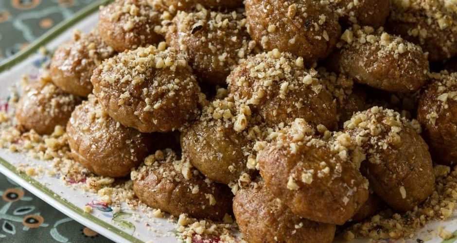

Μελομακάρονα

Steps
- For the syrup
- Boil all of the ingredients for the syrup, apart from honey, until sugar melts. Remove from heat. Add the honey and mix till combined.
- Let syrup cool for 3-4 hours. It must be cold by the time the cookies come out from the oven.
- You can prepare the syrup the day before.
- For the cookies
- Preheat the oven to 200° C.
- To make the cookies, you need to prepare 2 separate mixtures.
- For the first mixture, add all of the ingredients in a large bowl. Mix, using a hand whisk.
- In a separate bowl, add all of the ingredients for the second mixture.
- Combine the first and second mixture.
- Mix by hand, very gently and for a very short time (10 seconds at the most). If you mix longer the mixture will split or curdle.
- Mold cookie dough into oval shapes, 3-4 cm long, 30 g each. Try to keep them as similar as possible.
- Bake for about 20-25 minutes, until they are crunchy and dark golden brown.
- As soon as you remove them from the oven, soak the hot cookies in the syrup for 10 seconds.
- Allow them to drain on a wire rack.
- Drizzle with honey and chopped walnuts.
Ingredients
- For syrup
- 500 ml water
- 800 g granulated sugar
- 150 g honey
- 3 cinnamon sticks
- 3 whole cloves
- 1 orange, cut in half
- 1st mixture
- 400 ml orange juice
- 400 ml sunflower oil
- 180 ml olive oil
- 50 g caster sugar
- ½ teaspoon ground cloves
- 2-3 teaspoons ground cinnamon
- ¼ teaspoon ground nutmeg
- 1 teaspoon baking soda
- grated zest of 2 oranges
- 2nd mixture
- 1 kilo all-purpose flour
- 200 g fine semolina
- On top of cookies